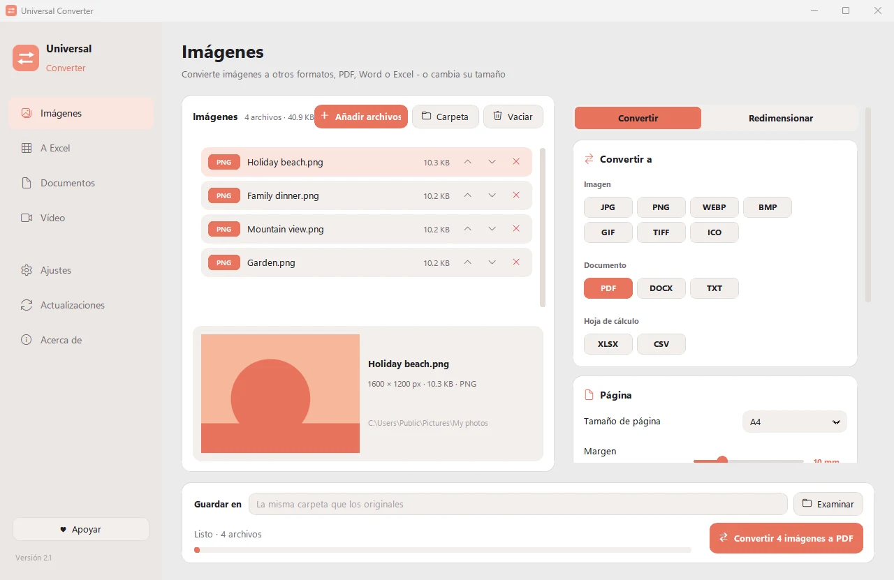

Unir fotos en un solo PDF
Útil para recibos, páginas escaneadas o un álbum de fotos. Elige el tamaño de página y los márgenes, y ordena las imágenes con las flechas junto a cada una.
Gratis · Windows 10 y 11, 64 bits · Análisis antivirus
Descargar para Mac (beta) Apple silicon, macOS 12 o posterior
Cómo instalar y actualizar
- Abra el .dmg descargado y arrastre Universal Converter a Aplicaciones.
- Abra la app. La primera vez macOS la bloquea porque no está firmada por Apple: pulse OK.
- Abra Ajustes del Sistema > Privacidad y seguridad, desplácese hacia abajo, pulse «Abrir igualmente» e introduzca su contraseña. Solo se hace una vez.
Actualizaciones: si lo permite al abrirla por primera vez, la app busca versiones nuevas cada vez que se inicia, comprueba su firma digital y las instala cuando usted elija.
Descargar para Android Android 10 o posterior
Cómo instalar y actualizar
- Pulse «Descargar para Android» en su teléfono.
- Abra el archivo descargado. Si Android lo pide, permita que su navegador o gestor de archivos instale apps.
- Pulse Instalar.
Actualizaciones: la app comprueba aproximadamente una vez al día y le avisa cuando hay una versión nueva. Descárguela del mismo modo e instálela sobre la anterior; sus ajustes se conservan.
Cómo hacerlo
- Abre Universal Converter y elige Imágenes a la izquierda.
- Arrastra tus archivos o una carpeta entera a la ventana, o pulsa Añadir archivos.
- Elige PDF en Convertir a, activa «Combinar en un PDF» y ajusta el tamaño de página y el margen.
- Pulsa Convertir. Los archivos nuevos se guardan junto a los originales o en la carpeta que elijas.

¿Por qué sin conexión?
Universal Converter hace el trabajo en tu propio dispositivo. Tus archivos siguen siendo privados, los archivos grandes no son problema y funciona sin conexión a internet.
Más cosas que puede hacer
- Comprimir un vídeo sin subirlo
- Convertir vídeos entre MP4, MKV, WebM, MOV y AVI
- Guardar el sonido de un vídeo en MP3
- Crear un GIF a partir de un vídeo
- Pasar tablas de un PDF a Excel
- Convertir un PDF a Word
- Unir varios archivos en un PDF
- Copiar el texto de una imagen (OCR)
- Convertir imágenes entre JPG, PNG, WEBP y más
- Cambiar el tamaño de imágenes o reducirlas a un tamaño de archivo
- Convertir un extracto bancario en PDF a Excel
- Extraer tablas de facturas en PDF a Excel
- Convertir un documento escaneado en un Word editable
- Convertir páginas de PDF a imágenes JPG
- Convertir documentos de Word a PDF